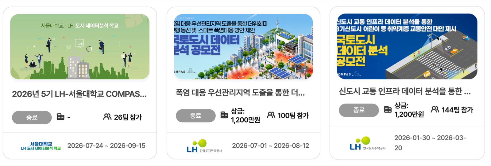

코드 작성
문법을 알고
직접 짠다
2022~24
도시가 직면한 문제를 해결하기 위하여
도시 데이터를 분석하여 정책과 의사결정에 필요한 증거(evidence)를 제시하는 능력
→ 분석 그 자체가 아니라, 분석으로 주장을 뒷받침하는 것이 목적이다
도구가 바뀔 때마다 "사람이 해야 하는 일"의 정의가 바뀌었다.
출처: R · Python · Gemini · Claude 로고 — Simple Icons, CC0 1.0 (simpleicons.org). 각 상표는 해당 기업의 것이며 제품을 가리키는 용도로만 썼다
SWE-bench Verified — 실제 GitHub 이슈 500건을 AI가 스스로 고쳐낸 비율 (%)
주: Anthropic 이 자사 모델에 대해 공개한 값이며, 측정 방식과 도구 설정이 판마다 달라 절대 비교에는 한계가 있다
출처: Anthropic 공개 자료 anthropic.com (3 Opus · 3.5 Sonnet · Opus 4 · Opus 4.5 시스템 카드) · 벤치마크 정의 swebench.com
AI에게 코드를 요청하면 —
요청한 내용과 정확히 맞지 않는 코드가 나오는 경우가 있었다
실행하면 오류가 나는 경우도 있었다
그래서 이렇게 가르쳤다 —
"직접 쓰지는 않더라도, 읽고 이해할 수는 있어야 한다."
에이전틱 AI(클로드 코드, Codex 등)의 등장으로
코드 오류는 거의 사라졌고,
규칙화하기 힘든 요청이 아니라면 대부분 수행한다
→ 사람이 코드를 짜거나, AI가 만든 코드의 오류를 검토할 필요가 사실상 없어졌다
① 코드를 달라고 하면
면적 60㎡ 이하를 왜 뺐는지, 평균과 중앙값 중
무엇을 볼 것인지는 코드에 적혀 있지 않다.
② 로직을 문서로 달라고 하면
판단이 필요한 자리가 전부 문장으로 드러난다.
여기는 사람이 읽고 따질 수 있다.
문법을 알고
직접 짠다
2022~24
AI가 짠 코드의
오류를 찾아낸다
2025
분석의 논리가 맞는지
문서로 확인한다
2026~
코드는 이제 AI의 일이다. 로직은 여전히 사람의 일이다.
그리고 문제정의도 여전히 사람의 일이다.
코드 대신 로직을 문서로 요구하고, 그 로직을 이해하고 검증한다
→ "무엇을, 왜, 어떻게 계산했는가"를 설명하지 못하는 분석은 증거가 될 수 없다
한 학기 동안 이 여섯 단계를 자기 문제로 완주한다
회색 상자 하나만 AI의 일이다. 나머지 다섯은 사람의 일이고, 이 수업이 가르치는 것이다.
단, 나머지 다섯도 AI와 함께 한다.
COMPAS (compas.lh.or.kr) — LH가 운영하는 도시문제 데이터 분석 공모 플랫폼
실습은 이 과제들의 공개 데이터를 쓴다.
각자 회원가입해 직접 내려받는다.
비공개로 표시된 데이터(유동인구·카드매출 등)는 쓰지 않는다.

| 주차 | 분석 단계 | COMPAS 과제 | 지역 |
|---|---|---|---|
| 7주 | 기술적 | 주택 시장 특성분석 | 세종시 |
| 9–10주 | 진단적 | 보건의료 불균형 — 의료 취약지역 도출 | 아산시 |
| 11–12주 | 예측적 | AI기법에 의한 인구예측모델 정확도 비교 | 화성시 |
| 13주 | 처방적 | 전기자동차 충전소 최적입지 선정 | 광양시 |
네 과제 모두 수상작의 보고서와 소스코드가 공개되어 있다. 자기 분석을 끝낸 뒤 견주어 보면, 같은 데이터로 어디까지 갈 수 있는지 알 수 있다.
2주차부터 매주 이 순서로 진행한다
강의 약 1시간 + 실습 약 1시간 30분
다음 주까지 준비할 것
수업 시간에 설치하지 않는다. 2주차는 설치가 끝난 상태에서 시작한다
왜 미리 하나 — 설치는 환경마다 걸리는 시간이 크게 다르다. 수업 시간은 설치가 아니라 "로직을 요구하는 법" 에 쓴다.
Q & A
권규상 Kyusang Kwon
kyusang.kwon@chungbuk.ac.kr